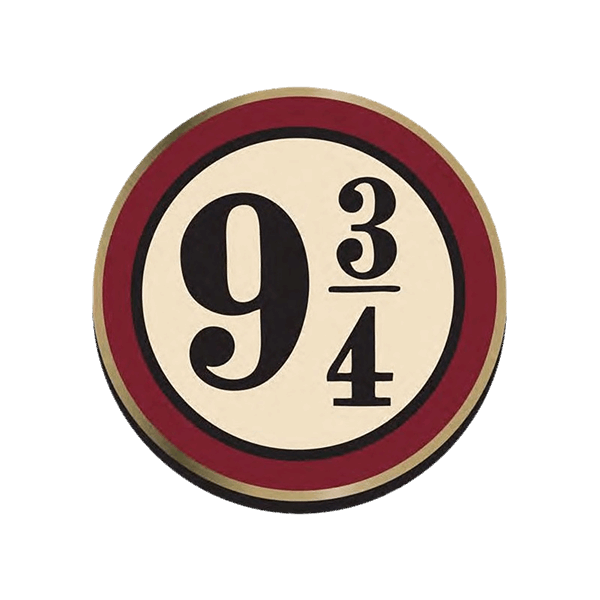
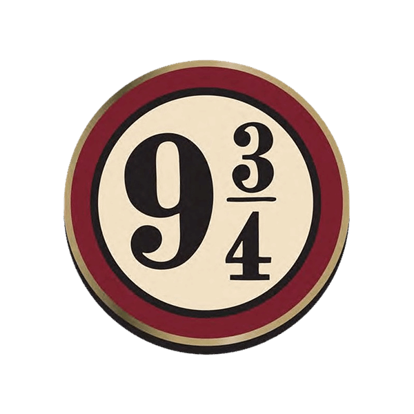
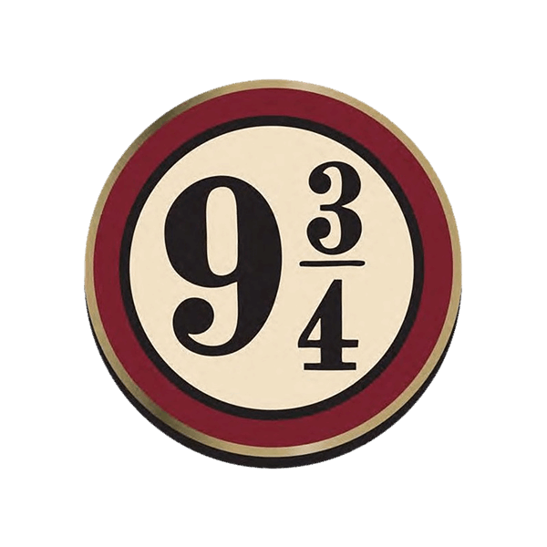
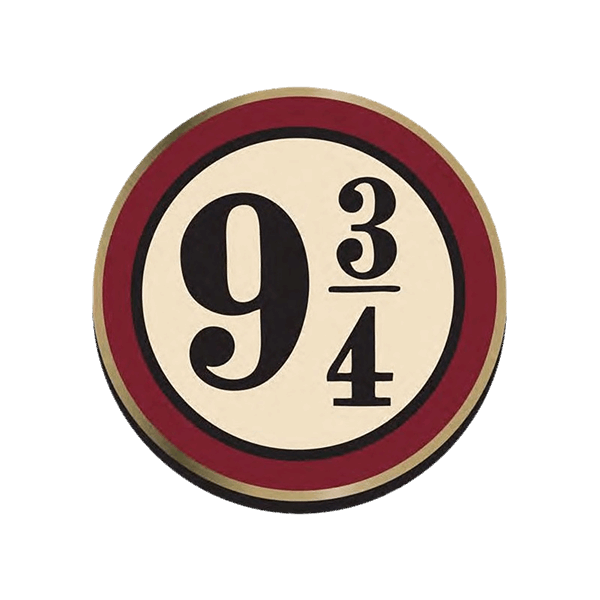

Harry Potter é uma série de sete romances de fantasia escrita pela autora britânica J. K. Rowling. A série narra as aventuras de um jovem chamado Harry Potter, que descobre aos 11 anos de idade que é um bruxo ao ser convidado para estudar na Escola de Magia e Bruxaria de Hogwarts. Os principais personagens que constituí a saga são Harry Potter , Hermione Granger , Rony Weasley que formam uma grande amizade e juntos lutam contra você-sabe-quem, conhecido como Lord Voldemort o bruxo das trevas.
.png)

.gif)


"Não há nada escondido em sua cabeça
que o Chapéu Seletor não consiga ver,
por isso é só me porem na cabeça que vou dizer
em que casa de Hogwarts deverão ficar.
Quem sabe sua morada é a Grifinória,
casa onde habitam os corações indômitos.
Ousadia e sangue frio e nobreza
destacam os alunos da Grifinória dos demais;
Quem sabe é na Lufa-Lufa que você vai morar,
onde seus moradores são justos e leais
pacientes, sinceros, sem medo da dor;
Ou será a velha e sábia Corvinal,
A casa dos que tem a mente sempre alerta,
onde os homens de grande espírito e saber
sempre encontrarão companheiros seus iguais;
ou quem sabe a Sonserina será a sua casa
E ali fará seus verdadeiros amigos,
homens de astúcia que usam quaisquer meios
para atingir os fins que antes colimaram.
Vamos, me experimentem! Não deverão temer! "